资料延伸 | 关于魔都上海的情报往事
点击蓝字关注「忽左忽右」
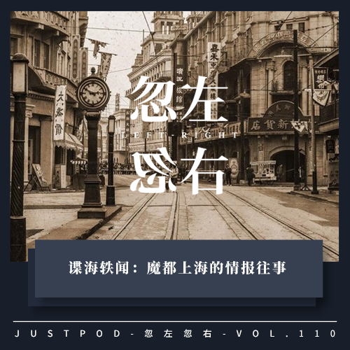
🎧 点击上方图片
跳转到「JustPod」小程序收听本期节目
本期简介
二十世纪上半叶的上海曾经是远东地区首屈一指的繁华大都市，吸引着无数的冒险者和探险家。作为各方势力交汇之处，魔都上海自然成为了各国情报机构开展间谍活动的重要舞台。本期《忽左忽右》邀请到了郑诗亮和沙青青，为听众解密魔都上海那些鲜为人知的谍战故事。本期话题成员：
程衍樑（新浪微博@GrenadierGuard2）
郑诗亮，《上海书评》执行主编（豆瓣ID：PomBom）
沙青青，上海图书馆历史文献中心副主任（豆瓣ID：BBpanda） 资料延伸旨在对节目中出现的重要人物、组织、事件、书籍以及影剧进行简单的介绍和总结，供听众和读者延伸阅读和拓展。0 1人物
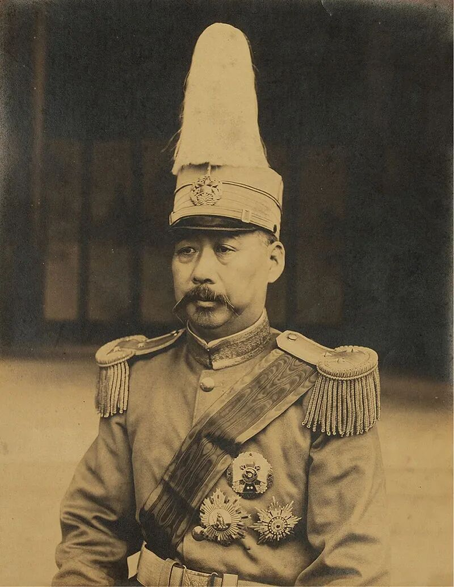
卢永祥
（1867-1933）
原名振河，字子嘉，山东省济南府济阳县人，清末民初军事将领。卢永祥早年毕业于天津武备学堂，后投入李鸿章的淮军，开始了军事生涯。袁世凯死后，卢永祥加入皖系。民国九年（1920年）7月直皖战争皖系败北后，他为了生存而靠拢奉系。民国十一年（1922年），他任浙江军务善后督办。民国十三年（1924年）9月，直系的江苏督军齐燮元和他开始了第二次直奉战争的前哨战——江浙战争。因为齐燮元受到福建督军孙传芳的支援，卢遂败北，流亡日本。民国二十二年（1933年），卢永祥病逝于天津，享年67岁。
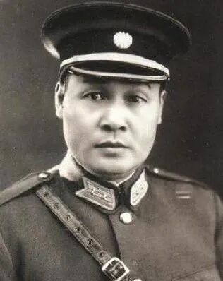
杨虎
（1889-1966）
字啸天，中国安徽省宁国府宁国县杨山乡人，国军陆军中将，中华民国及中华人民共和国政治人物。早年加入中国同盟会。辛亥革命后，分别担任黄兴的参谋和孙文的秘书。孙文逝世后，杨虎与蒋介石接近，出任上海警备司令。杨虎在“清党”工作中，获得“杀人如麻、人恐如虎”的评价。1949年，杨虎显示了完全同中国共产党合作的姿态，但后来因为对自身地位不满而叛变被捕，1966年3月在北京复兴医院病逝。
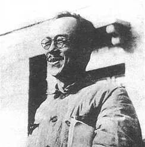
康生
（1898-1975）
原名张宗可，字少卿，乳名张旺，曾化名赵容、张溶，笔名鲁赤水，出生于山东诸城。他是中国共产党和中华人民共和国早期主要领导人之一，曾担任中共中央政治局常委、中共中央副主席、全国人大常委会副委员长、全国政协副主席等职务。他也是发动“文化大革命”的关键人物，生前任中央文革小组顾问，死后被列为林彪、江青反革命集团主犯。
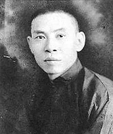
杜月笙
（1888-1951）
名镛，号月笙，原名月生。江苏省上海县（今属上海市浦东新区）人，近代中国绿林、上海租界青帮中著名的人物，悟字辈，国民革命军少将，“上海青帮三大亨”，素有“黄金荣贪财，张啸林善打，杜月笙会做人”的说法。1931年江淮水灾时，赈灾实际由杜月笙在背后向上海工商界打关系、募款，并在上海发起戏曲义演、赛马募捐，其募款和个人捐款累计53万元，占国民政府水灾救济委员会所募的20.3%，“为水灾做出的贡献无人能出其右”。
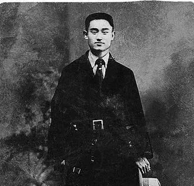
汪寿华
（1901-1927）
原名何纪元，曾用名何今亮，字介尘，中国浙江诸暨人，中国共产党早期工人运动的组织者和领导人。1917年秋，考入浙江省立第一师范学校，受五四运动影响，开始学习并接受马克思主义。1920年9月，经沈玄庐等人介绍，加入中国社会主义青年团。1926年5月开始，作为上海区委军事特别委员会成员的汪寿华，多次发动上海各行业工人进行大规模罢工斗争，并参与领导了上海工人的第一、二次武装起义。1927年4月11日，杜月笙邀汪寿华晚上去其府上赴宴。当晚，汪寿华应约前去，后遇害，年仅26岁。
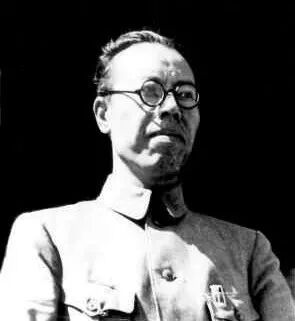
李立三
（1899-1967）
原名李隆郅，男，湖南醴陵人，中国政治家、无产阶级革命家，中国工人运动领袖，曾任中国共产党实际最高领导人、政治局常委兼秘书长。李立三于1919年赴法国勤工俭学，1921年回到中国后加入中国共产党，分别在武汉、上海和广州进行工人运动，从1927年起任中共中央常委。他在出任中央主要领导期间，推行较为激进的“立三路线”（1945年中共六届七中全会《关于若干历史问题的决议》说他在1930年6月至9月犯了左倾路线错误）。中华人民共和国建国后，历任中央人民政府委员、政务院政务委员、中央人民政府劳动部部长、中华人民共和国劳动部部长。
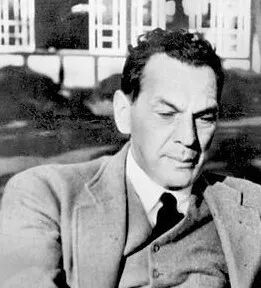
理查·佐尔格
（德语：Richard Sorge，俄语：Рихард Зорге，日语：リヒャルト・ゾルゲ，1895-1944）
早年译作“索治”、“沙奇”。德俄混血，20世纪最著名的苏联间谍，他的情报网代号是“拉姆齐”（Ramsay）。佐尔格出生在俄罗斯帝国外高加索巴库（现阿塞拜疆共和国首都），后随家返回柏林。第一次世界大战爆发不久，19岁的理查·佐尔格志愿入伍，加入德军炮兵野战部队。1919年加入德国共产党。1925年加入苏联国籍，并转入苏联共产党（布尔什维克）。1930年，佐尔格来到中国上海，入住沙逊大厦的华懋饭店（Cathay Hotel），化名亚历山大·约翰逊，以记者和农业专家的身份，随史沫特莱环游中国，与各地的中国共产党成员建立联系。1933年又前往日本，1944年于东京被日本当局处决。
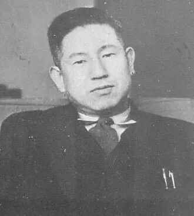
尾崎秀实
（おざき ほつみ，1901-1944）
日本评论家、记者、共产主义者、中国问题专家、苏联间谍。主张“东亚协同体”。尾崎秀实出生于日本东京，童年时期在台北度过，深受着日本人对台湾人的歧视待遇的折磨。1925年，尾崎进入东大大学院进修，学习了一年。在此期间他接触到了共产主义思想，在大森义太郎的指导下参加唯物论的研究会。1926年，加入朝日新闻社担任记者，翌年被派往大阪朝日新闻支那部，成为特派员，前往上海。在上海期间他经常出入内山书店，与店主内山完造以及郭沫若、鲁迅、夏衍等中国左翼人士熟识，并与中国共产党进行交流。1930年，他认识了著名的苏联间谍理查·佐尔格。1941年，佐尔格间谍案被发觉，尾崎秀实被捕。经过审讯，尾崎秀实承认自己是苏联间谍。1944年，在巢鸭监狱被处以绞刑。
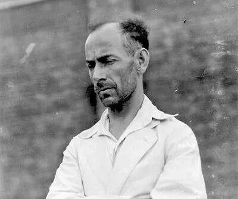
牛兰
（Hilaire Noulens，1894-1963）
本名雅各布·马特耶维奇·鲁德尼克（Jakob Rudnik），共产国际国际联络部在上海的秘密交通站负责人，负责转送各种文件和经费等。牛兰出生于乌克兰一个工人家庭，1917年加入布尔什维克，1918年进入契卡，1924年被调入共产国际国际联络部，1930年由莫斯科经中国的哈尔滨、大连抵达上海，化名牛兰，建立秘密交通站。牛兰到中国后一年多时间，主要在中国各地旅行。1930年初，其妻子达吉亚娜也带着儿子来到上海，化名汪德利曾协助丈夫工作，二人在上海建起了三家贸易公司。夫妇二人的主要工作是利用在租界内的各种合法身份，协助共产国际远东局保持与中共和亚洲各国共党的邮件联系，为去苏联的共产党人办理手续，通过公开渠道接收共产国际从柏林银行转来的资金，再分发到包括中共在内的东亚各国共产主义组织处。
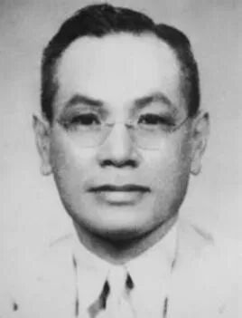
杨登瀛
（1893—1969）
出生于广东省香山县，毕业于日本早稻田大学，1919年回国参加五四运动，后加入国民党，五卅运动时参加了国民党左派的活动。杨登瀛于1928年加入中统，被委任为国民党中央组织部调查科驻上海的特派员。在此期间，杨登瀛为中共提供的大量重要情报，使得中共在当时敌强我弱的斗争形势下，多次化险为夷，避免更大的损失。1931年，顾顺章叛变之后，他的身份暴露，被捕入狱。1934年出狱，同年任南京反省院副院长，后穷困潦倒。解放后，陈赓等为其提供证明，使其晚年生活有所保障。1969年12月19日病逝。
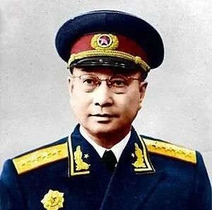
陈赓
（1903-1961）
原名陈庶康，湖南湘乡人。中国工农红军及中国人民解放军主要领导人之一，军事家、中国人民解放军大将。陈赓早年加入中国共产党，此后进入黄埔军校第一期，随后参加东征。之后赴苏联学习间谍技术，回国后参加南昌起义，之后到上海负责中共中央特科工作。后赴鄂豫皖苏区任红四方面军师长等职务，负伤赴上海治疗期间被捕。后获释赴中央苏区，并跟随红军主力战略转移。抗日战争期间，担任八路军129师386旅旅长。第二次国共内战期间，率领晋冀鲁豫野战军一部在山西、河南地区作战，之后担任中国人民解放军第二野战军第四兵团司令员兼政委，率部参与淮海战役、渡江战役，攻下华中、华南、西南直至云南全境，并支援法越战争。1951年，担任中国人民志愿军副司令员参与指挥朝鲜战争。回国后担任人民解放军副总参谋长、中国国防部副部长等职位。1961年3月16日，陈赓于上海病逝。
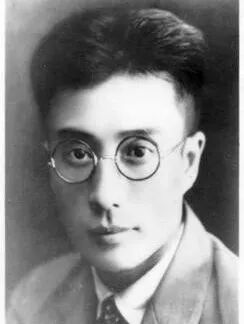
钱壮飞
（1895-1935）
本名钱北秋，又名钱潮，浙江湖州吴兴人。1928年考入上海无线电训练班，因为他是上海无线电管理局局长徐恩曾同学兼校友，很快获取其信任，担任其机要秘书。钱奉中国共产党中央特别行动科领导周恩来、陈赓之命打入中统，又通过其特殊地位，引入李克农、胡底二人卧底。三人互相配合，获取大量珍贵情报，完全掌握中国国民党内部密电密码本。日后，周恩来称颂三人为“龙潭三杰”。
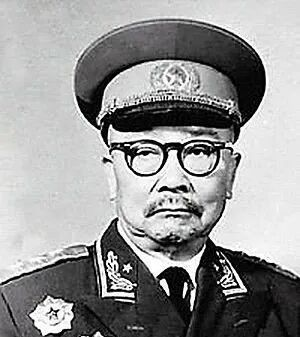
李克农
（1899-1962）
安徽巢县烔炀镇（现安徽巢湖市烔炀镇）中李村人，中国人民解放军上将。李克农早年在上海从事中共地下工作，被称为“龙潭三杰”之一。在中央苏区任红一方面军政治保卫局局长，长征到达陕北后，参与国共谈判。抗日战争时期，在国统区从事统战工作，后任中共中央社会部副部长。国共内战时期，任中共中央社会部部长，长期负责情报工作。中华人民共和国成立后，任中华人民共和国外交部副部长、中国人民解放军副总参谋长、中共中央调查部部长等职。李克农是中国人民解放军开国上将中，唯一一位没有带兵打仗历史的人，被称为中共的“特工之王”。
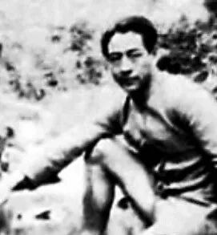
胡底
（1905-1935）
原名胡百昌，又名胡北风，化名胡马等，安徽舒城人，中国共产党早期著名谍报人员、中国电影明星。1925年胡在北京中国大学求学期间加入中国共产党。1926年同钱壮飞等人合拍中国第一部黑白武侠故事片《燕山侠隐》，1927年遭张作霖通缉，改名胡北风，南下避难上海。到上海后，加入昆仑电影制片厂，作为男主角出演《盘丝洞》《昆仑大盗》等武侠电影，被誉为“东方范明克”。1929年，胡与李克农结识，恢复了与共产党组织的联系，并介绍钱壮飞与李见面。后钱受中共中央特科委派，赴南京打入徐恩曾组建的中国国民党特务组织中央组织部党务调查科。中共中央决定将打入国民党内部卧底的李克农、钱壮飞、胡底三人组成党小组，后周恩来称誉他们为“龙潭三杰”。
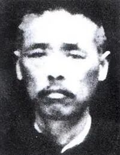
向忠发
（1879-1931）
字仲发，笔名忠发、科发、拜发、独中、独用、特生、之夫，化名许白英、杨特生、余达强，祖籍湖北汉阳府汉川县，出生于上海。曾任中共中央政治局主席、中共中央总书记，是中国共产党最高领导人之一。向忠发早年参加组织京汉铁路大罢工、担任湖北省总工会委员长。1928年，担任中国共产党中央政治局主席兼中共中央常委会主席，是名义上的中国共产党最高领导人。1931年6月被南京政府方面捕后叛变，随即被处决。
顾顺章
（1904-1935）
本名顾凤鸣，江苏省宝山县吴淞人（今属上海市宝山区），中华民国政治人物。顾顺章是中共早期领导人之一，地下情报人员，中共秘密特务组织中共中央特科的负责人。1931年被捕后投降国民政府，叛变中共，供出了中共的大量机密。1935年，顾顺章因涉及中统军统矛盾、组建“新共产党”触犯蒋介石忌讳而被国民党处死。
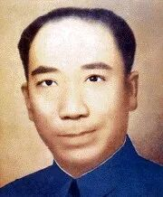
戴笠
（1897-1946）
中华民国陆军中将，浙江省江山县保安乡保安村人，原名春风，字雨农，后改雨浓，号“芳洲”，主要情报化名金水、沈沛霖，中华民国情报头领、中华民国秘密警察头目、抗日民族英雄。长期从事特工与间谍工作，曾负责国民政府情治机关，创立国民政府军事委员会调查统计局（简称军统）并担任副局长（但为实际领导人）、中美特种技术合作所主任。其所领导的军统局行动，杀死许多异议分子、中共党员及民主党派人士、日本人及与日本人合作的汉奸，是国民政府军事委员会委员长蒋中正的爱将。1946年3月17日，戴笠因从北平起飞的专用飞机失事身亡，死后被国民政府追任为陆军中将。
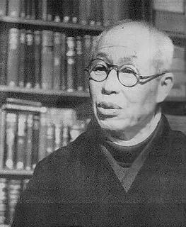
内山完造
（うちやま かんぞう，1885-1959）
汉名邬其山，旅居中国上海的日本商人，内山书店老板，鲁迅的密友。内山完造生于日本冈山县芳井村（今井原市）。1912年在京都加入基督教会，次年经牧野虎次牧师推荐，任大学眼药本店参天堂驻上海推销员，推销眼药水。1917年，内山完造夫妇在北四川路魏盛里（今四川北路1881弄）租住房屋的楼下开设了内山书店。最初仅销售基督教书籍，以后扩展到一般中、日文书籍。1929年，内山书店迁往施高塔路11号（今四川北路2048号），后又在中区四川路开设分店。1930年，内山完造脱离大学眼药本店参天堂后，内山书店开始销售中国政府禁售的左翼书籍。1959年，内山完造受邀请前往北京参加中华人民共和国建国10周年国庆观礼，突发脑溢血，21日在北京协和医院去世，随后安葬于上海市虹桥路万国公墓（今宋庆龄陵园）。
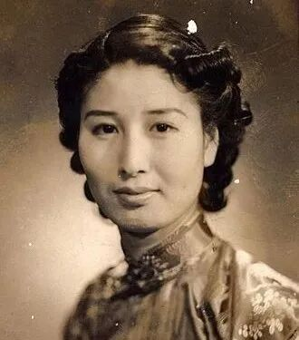
郑苹如
（1918-1940）
原籍浙江兰溪，中日混血，是中华民国上海的知名社交人物，曾经当过上海《良友画报》封面人物，亦曾协助蒋中正的重庆国民政府从事情报工作。她曾就读上海法政学院，因家庭关系，曾与在上海的日本人交往，但反对日本军国主义。1939年12月21日，晚上6时左右，郑苹如在静安寺路西比利亚皮草行暗杀丁默邨失手，暴露了身份，被汪精卫政府捕获，关在忆定盘路（现江苏路）。1940年2月，汪精卫命76号特工总部首领李士群瞒着丁默邨将其枪杀处决，逝世时年仅22岁。
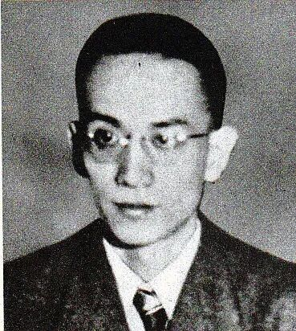
丁默邨
（1901-1947）
又名丁默村，原名丁勒生，中国湖南常德人（今武陵区），曾任汪精卫政权社会部部长、浙江省主席，1947年7月5日于苏州狮子口监狱刑场被国民政府处决。1921年秋于上海受施存统赏识，加入中国共产党。1924年第一次国共合作时期在上海加入中国国民党，1925年前往国民党控制下的广州。1926年任职于国民党中央组织部调查科（情报机构中统的前身）。1938年，日本企图扑灭上海抗日力量，拟组织一支特工队伍，丁默邨被日本人选中，意图以华制华。1939年起丁默邨先后任职汪精卫政权社会部、交通部、社会福利部等部长、及浙江省主席等要职。1945年9月被国民政府逮捕。1947年7月5日于苏州狮子口监狱刑场被国民政府处决。
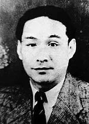
潘汉年
（1906-1977）
曾化名萧叔安，男，江苏宜兴人，中国左翼作家、政治人物。潘汉年早期负责中共对外宣传工作，后转为负责中共情报工作，长期作为中共在上海、香港的情报头目进行活动，传递过大量有利于中共的情报。中华人民共和国成立后，担任过上海副市长，1955年被秘密逮捕，1963年被最高人民法院定罪入狱15年、剥夺政治权利终身。1966年文革开始后重新收监，1976年重审被开除党籍、判处无期徒刑，1977年4月逝世。潘汉年在1982年获得平反，被中共中央追评为“优秀忠诚的共产党员”，被中共统战部评价为“有大功于党的统一战线事业的忠诚战士”，被认为是最早从事党的文化统一战线工作的领导人，协助实现了中国共产党和国民党领导下地方军阀的合作和第二次国共合作，为1948年全国政协的召开具有重大的贡献。
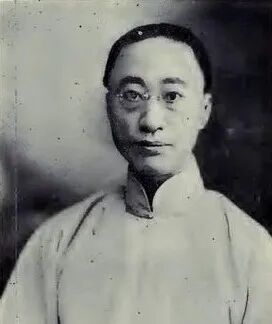
李国杰
（1881-1939）
字伟侯，号元直，安徽合肥人，清朝及中华民国官员、实业家。是李经述的长子，李鸿章的长孙，因蒋介石怀疑其与亲日傀儡政权合作，命军统局刺客将之刺杀。李国杰承袭李鸿章一等侯的爵位。1910年，李国杰任出使比利时钦差大臣。中华民国成立后，李国杰留在比利时任外交代表。归国后于1914年任参政院参政。后因晋见隆裕太后时说袁世凯坏话，遭人密报袁世凯，李国杰乃逃往上海。1916年，经轮船招商局董事会选举，李国杰任董事，1924年当选董事会董事长。抗日战争爆发后，轮船招商局总局先迁香港，后迁重庆，但李国杰仍留在上海。1939年，由于受到了军统的怀疑，李国杰刚出上海新闸路沁园邨的家，便遭枪击，在医院逝世。
0 2组织
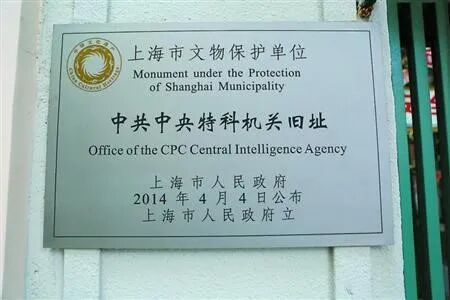
中国共产党中央特别行动科，简称中央特科，是中国共产党在1920至1930年代期间，所建立的一个情报和政治保卫机关，主要活动地域在当时中共中央所在地上海。中央特科主要从事特务工作，包括情报收集，对中共高层人物实施政治保卫，防止中共高层人物被国民政府和公共租界当局逮捕或暗杀，并且开展针对国民政府的渗透活动。中央特科还有一个重要任务，是采用暗杀的方式惩处当时背叛并且对中共造成严重危害的前中共党员。
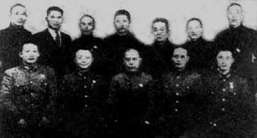
三民主义力行社，简称力行社，是中华民族复兴社的核心组织，以其别称“蓝衣社”闻名一时。最早由一些黄埔军校学生组成，强调拥护蒋介石以建立其“在全国人心目中的至高权威和信仰中心”为目标。自1932年正式成立，到1938年因“发展到过于庞大，而失去其以暗配明的作用”及对日抗战的开始，该社于该年解散。
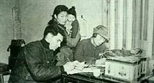
中美特种技术合作所（Sino-American Cooperative Organization, SACO），简称为中美合作所。它是第二次世界大战中中国和美国军事情报机构（国民政府军事委员会调查统计局与美国海军部情报署）合作建立的战时跨国情报机构，成立于1943年1月。其目的是中美之间加强军事情报的合作，共同打击日本。二战同盟国胜利后，1946年1月中美合作所正式宣告解散。所内军统局人员向军统局报到继续工作，其他人员则资遣。下辖情报站均停止活动，所属医院则移交其他医院接收。1946年7月所有手续办理完毕。
黑龙会（こくりゅうかい），日本军国主义和泛亚主义组织，成立于1901年，解散于1945年。1901年2月23日，头山满、内田良平等人在原玄洋社基础上于东京横滨码头组织成立黑龙会，目的在于把俄罗斯赶出黑龙江，其会名即从黑龙江而来。内田自任首任“主干”，聘头山满为顾问，创建会刊《黑龙》。黑龙会受反帝国主义和反殖民主义影响（如北一辉），反对日本国内掌权派的亲西方政策，视当权者为“与西方帝国主义勾结的买办资产阶级”，这为1930年代泛亚主义激进派刺杀政府上层的恐怖活动，以及下层军官领导的革命埋下了伏笔，直接导致日本本国为军部控制并加入第二次世界大战的轴心国阵营。二战结束后，被定义为极端右翼组织。1945年9月13日，遭驻日盟军总司令部（GHQ）勒令解散。
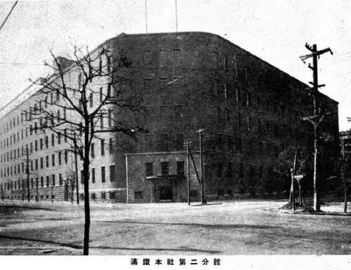
满铁调查部（まんてつちょうさぶ）是一个南满洲铁道株式会社下设的调查机构。1907年，满铁的第一任总裁后藤新平男爵设立满铁调查部。为了开展经营的需要，满铁调查部初期主要是对中国东北地区的政治、经济、地理等基础信息进行调查。后来，随着日本侵华范围的扩大，满铁调查部也开始对中国全境进行调查，当时被视为日本最强大的智库。日本战败后，满铁也随之解散，但是原先满铁调查部的很多调查人员仍然活跃于日本的政界、商界和学术界。
大政翼赞会（たいせいよくさんかい）是日本在第二次世界大战期间的一个政治团体，于1940年10月12日宣告成立，1945年6月13日解散。其以推动政治权力集中的“新体制运动”为主要目标，即将既有的政党解散成一个全国性的政治组织，以一党专政的模式统治日本。由于当时任何形式的结社自由均被管制，大政翼赞会因而自称是一种为了公共目的而成立的“公事结社”。虽然自身认为是一个超越党派的组织，但战后被广泛被认为是与同时代之纳粹党、法西斯党相似的独裁政党，较不同之处是大政翼赞会采取多数决，与上述政党多为个人独裁相异。除了位于首都东京的中央本部外，在全国各地设有道府县支部、大都市支部、市区町村支部、町内会、部落会等分支机构。
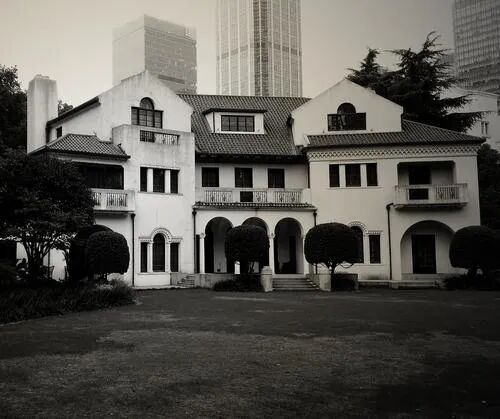
梅机关，是中国抗日战争期间，日本在上海设立的办事机构，负责协助汪精卫成立汪精卫政权，打击重庆国民政府在日占区的特务工作。1939年8月22日，经过日本五相会议决定，日本陆军少将影佐祯昭在上海虹口区北四川路（今四川北路）的“梅华堂”成立办事处，参谋本部将其工作称为“梅工作”，机关称为“梅机关”。其成员包括了日本陆军省、海军省、外务省的代表和民间人士共三十余人。其办公经费由陆军负责，人事与交通经费由各部会负责，因此梅机关不是纯粹的日本陆军机构，而是不同政府部门与民间的合作机构。
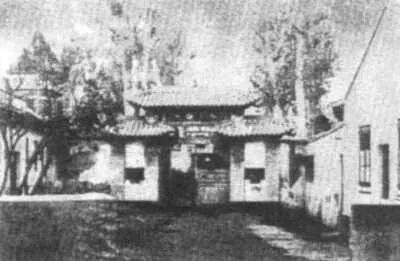
中国国民党中央执行委员会特务委员会特工总部，为第二次世界大战时期汪精卫政权奉日军令设置于上海市的特工总部，因其所在地为上海市沪西越界筑路地段的极司非尔路76号，又被称为76号，今址在万航渡路435号。在76号内里常刑囚拷打重庆分子、抗日志士。丁默邨为特工总部主任，李士群、唐惠民为副主任。特工总部下设16个处室及直属行动总队，在日占区还设有分站，全部人员约1800余人。“76号”每采取大的行动，不但要事先知会日本特务机关，还要在日本特务机关派员督导下方能实施。1943年9月李士群被特高课毒死后，特工总部被撤销，并入了军事委员会政治保卫总局，下设第一局和第二局。第一局虽仍驻“76号”原址，但权势大不如前。1944年11月，赴日本治病的汪精卫死于日本，“76号”再降为第一局下属的上海分局。
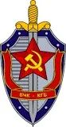
国家政治保卫局，全称为“俄罗斯联邦内务人民委员会国家政治保卫局”（俄语：Государственное Политическое Управление НКВД РСФСР），俄文缩写ГПУ音译“格别乌”，是苏俄在1922年至1934年的秘密警察机构，第一位主任即契卡原主席捷尔任斯基。从文件上看，格别乌的职能并不大，如其并没有拘捕和处决反革命分子的权力。但随着时间的推移，格别乌的力量和影响力越来越大，实际上已经超越了契卡。
0 3事件
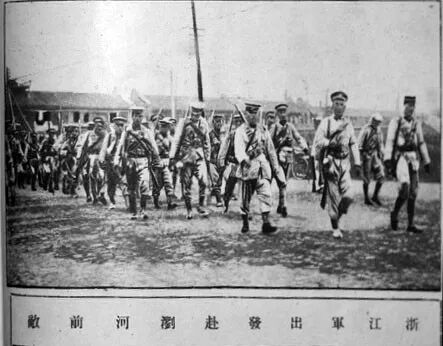
江浙战争，又称齐卢战争、甲子兵祸、甲子兵灾，是1924年中华民国江苏督军齐燮元与浙江督军卢永祥之间进行的战争，也是第二次直奉战争的导火索。民国初年，上海在行政上属于江苏省，但驻防上海的历任淞沪护军使均属于皖系，事实上受治于浙江督军，不受属于直系的江苏督军节制。1924年9月，江苏督军齐燮元，联合福建孙传芳、安徽张文生向浙江督军卢永祥发动进攻。9月3日，江苏军在江苏宜兴打响了第一枪。江浙战争正式爆发。9月18日，因浙江警务处长夏超倒戈，齐燮元的军队攻陷杭州，卢永祥退往上海。10月，两军在上海近郊发生激战。10月13日，卢永祥下野东渡日本，江浙战争结束。这次战争破坏相当严重，齐燮元军10月9日攻占青浦时，劫掠了全城三日，造成规模不小的难民潮涌入上海租界。
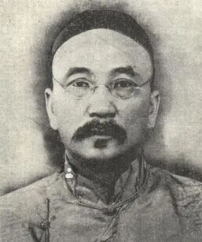
唐绍仪遇刺案指的是1938年9月30日，国民政府军统特务为不让唐绍仪为日本所利用，在唐绍仪上海寓所将其刺杀，享年76岁。抗战初期，唐绍仪曾秉承蒋介石的旨意与日本人密谈谋和条件。上海沦陷后，没有西撤，仍留居上海法租界福开森路（今武康路40弄1号），但是处于国民党军统特务的秘密监视之下。1938年9月，日本特务首脑土肥原贤二亲自来到上海，在唐绍仪女婿岑德广（朝鲜郑氏所生小女儿唐宝玫的第二任丈夫）带领下同唐会谈，拉拢唐出山。当时在上海日本特务机关“片山”担任高级特务的台湾人蔡诚仁将此事告知军统上海组长，军统透过唐绍仪女秘书取得情报，包括唐绍仪与日本签的协议书等，遂照上交给戴笠，由于证据明确，“奉准予以制裁”。
9月30日上午9时，军统上海站行动总队长赵理君亲自出马，扮成古董商，携带古董若干，和助手谢志磐、李阿大，乘轿车来到唐府。唐府仆人请客人在客厅等候，然后上楼告知唐绍仪。当仆人离去后，赵理君把客厅内的火柴藏起来。唐随仆人下楼后，令仆人给客人敬烟倒茶，但仆人找不到火柴，转身离开客厅，去储藏室寻找。此时唐正细细鉴赏古董，爱不释手。李阿大趁机抽出斧头，猛劈唐后脑。见唐倒地，赵理君指挥众人撤退，边走边假装与里面告别，以迷惑院中保镖。唐被送附近的广慈医院抢救，于次日凌晨3:50气绝。
0 4书籍
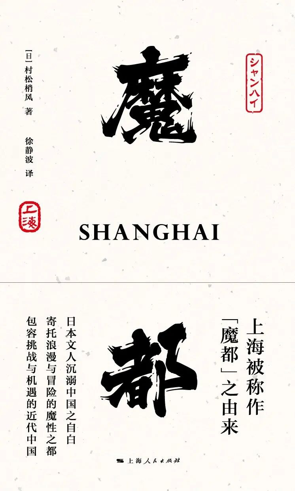
《魔都》
[日] 村松梢风 著
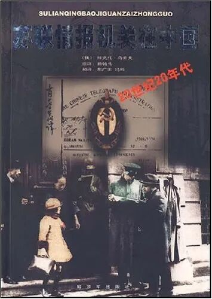
《苏联情报机关在中国》
[俄] 维克托·乌索夫 著
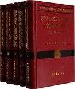
《共产国际联共(布)与中国革命档案资料丛书》
中共中央党史研究室第一研究部 著
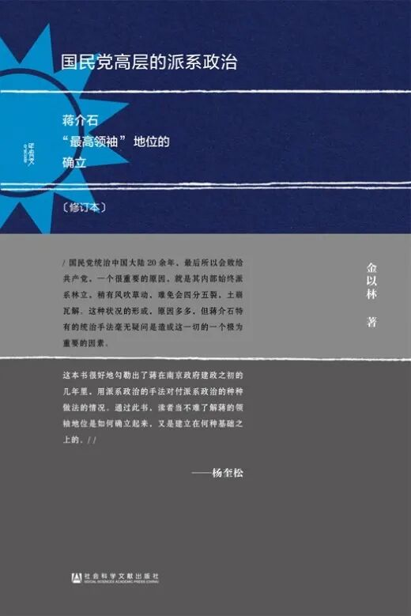
《国民党高层的派系政治》
金以林 著
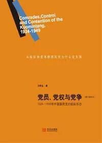
《党员、党权和党争》
王奇生 著
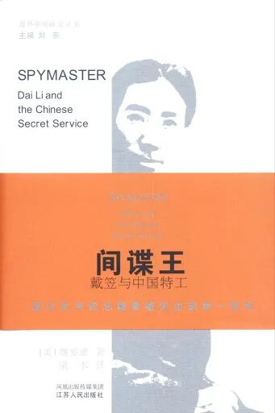
《间谍王：戴笠与中国特工》
[美] 魏斐德 著
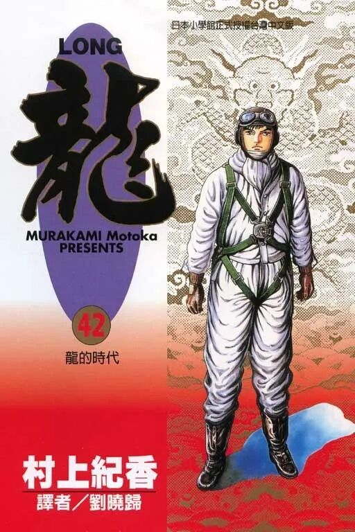
《龙》
[日] 村上纪香 著
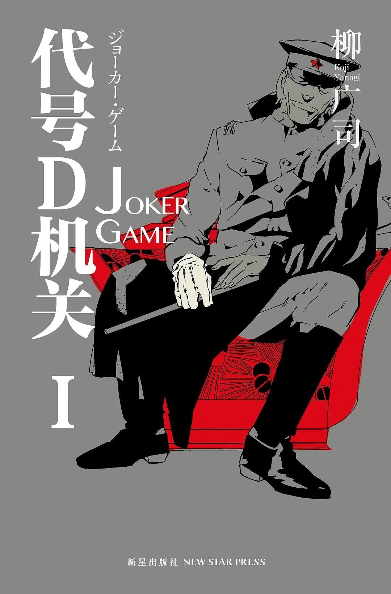
《代号D机关》
[日] 柳广司 著
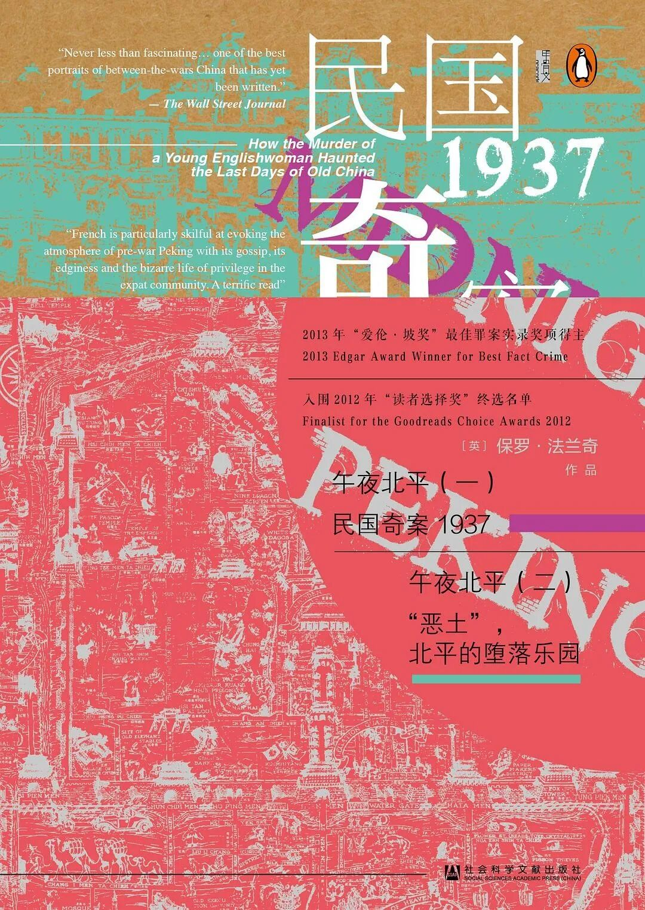
《午夜北平》
[英] 保罗·法兰奇 著
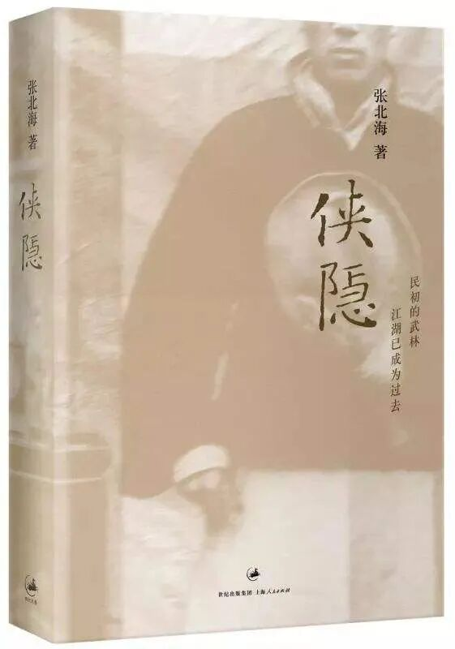
《侠隐》
张北海 著
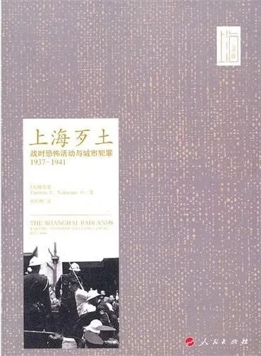
《上海歹土：战时恐怖活动与城市犯罪 1937-1941》
[美] 魏斐德 著
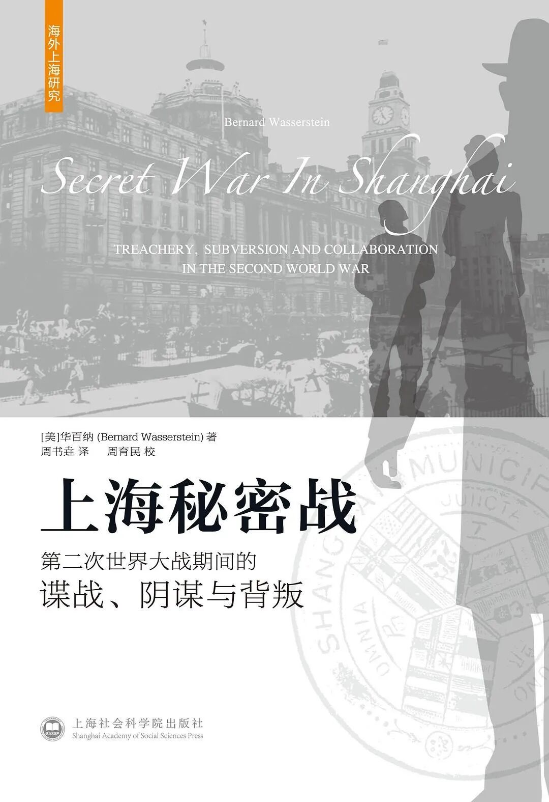
《上海秘密战：第二次世界大战期间的谍战、阴谋与背叛》
[美] 华百纳 著
0 5影剧
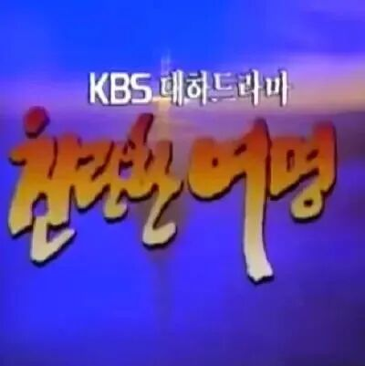
《灿烂的黎明（찬란한여명）》
《巴比伦柏林（Babylon Berlin）》
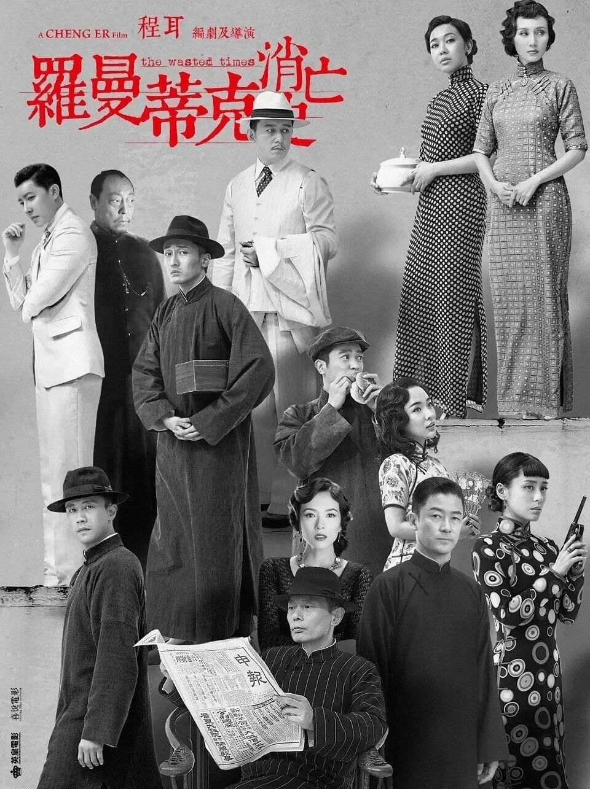
《罗曼蒂克消亡史》
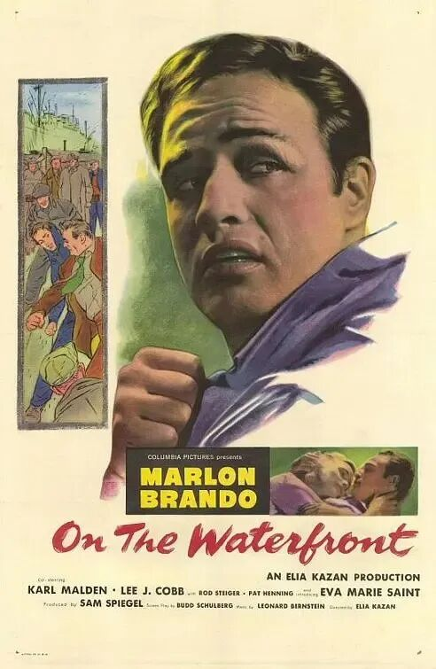
《码头风云（On The Waterfront）》
《爱尔兰人（The Irishman）》
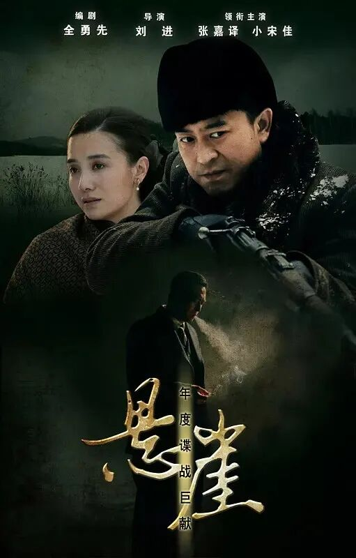
《悬崖》
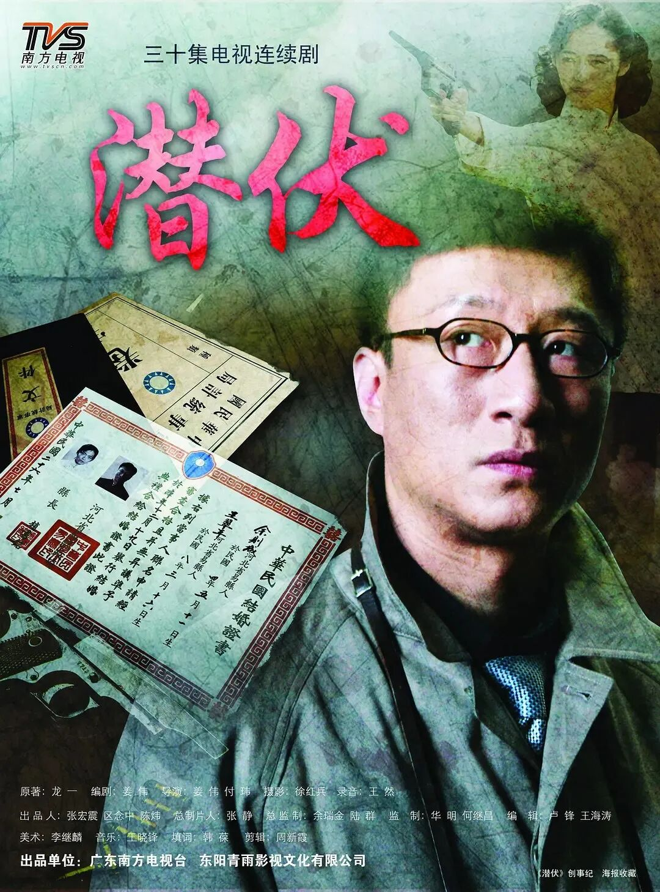
《潜伏》
《色，戒》
--延伸阅读--
📖没有硝烟的战争：中外情报部门如何在上海滩斗法
沙青青，2015-11-15 ，澎湃新闻https://www.thepaper.cn/newsDetail_forward_1396507
📖上海书评︱沙青青：把情报工作当副业的银行家
沙青青，2016-12-21，澎湃新闻https://www.thepaper.cn/newsDetail_forward_1582107 📜还可在知网搜索以下两篇沙老师撰写的相关论文： 《国际革命背景下的基层动员：以中东路事件前后的满洲省委为例》
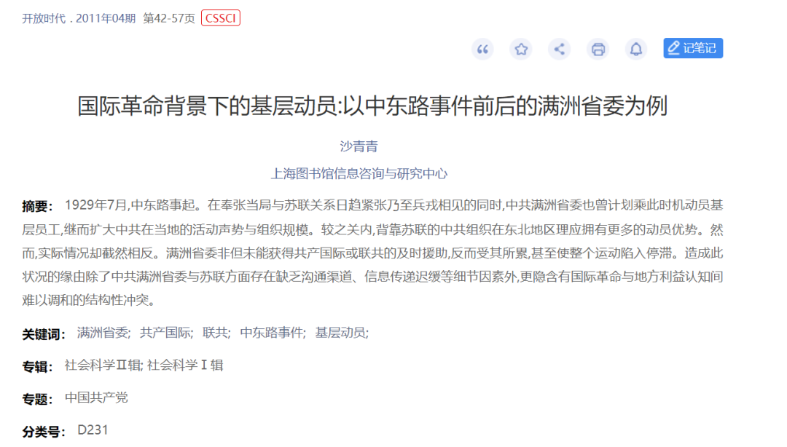
《孙曜东口述访谈记录》
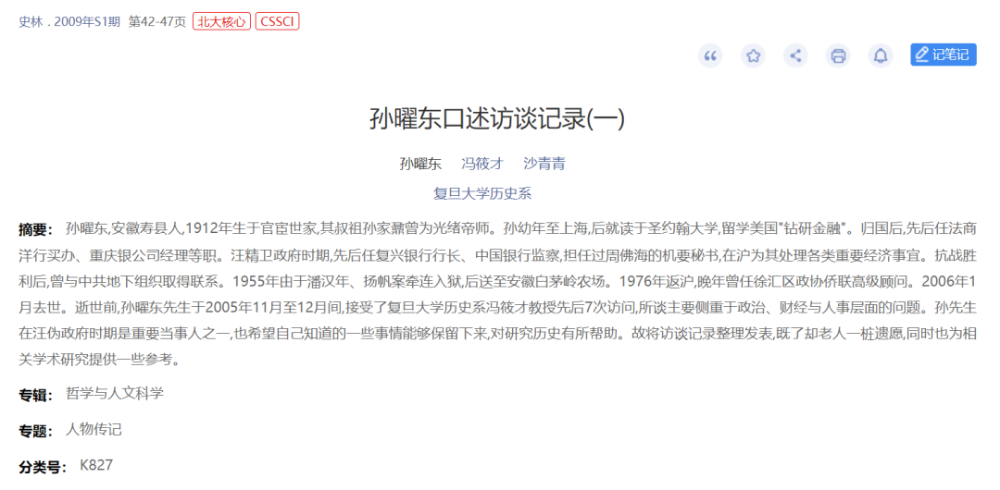
排版 ：刘阳 | 文字整理：车旭晨

苹果播客 | Spotify | 小宇宙App | 网易云音乐喜马拉雅 | 蜻蜓 FM | 荔枝 FM央广云听 | 芒果动听 | 阿基米德搜索『忽左忽右』订阅收听

帮我点个“在看”呗